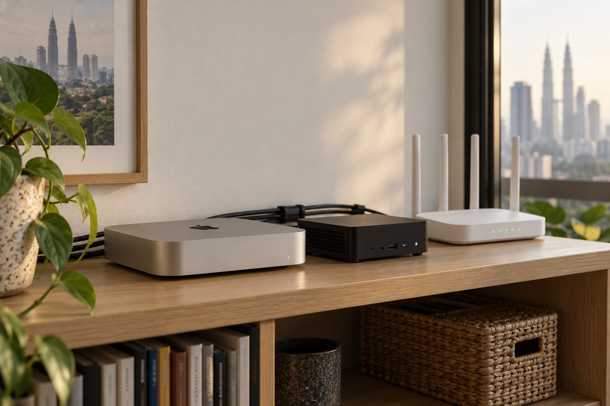

出门在外，线上出了紧急 bug
不用找地方打开电脑。在手机上把报错发给 Claude Code，它在远程电脑上查日志、修复、跑完测试。你看一眼 diff，批准部署，接着玩。
- 你
- 一句话，加一次批准
- 远程电脑
- 查日志 → 修复 → 测试 → 部署
nanoMuse 记住你、处理你的个人事务；Codex 与 Claude Code 在远程电脑上替你完成工作。我们提供它们运行的那台电脑：真实、独享、长期在线，有人维护。
 你的远程主机 · 吉隆坡
你的远程主机 · 吉隆坡界面为示意；操作手机上的 App 目前只支持安卓
01 个人 / 生活 Agent
nanoMuse 是一个开源的个人 Agent。它记得你的目标，在后台一步步推进；事情发生时自动开工；还能跨手机和电脑操作应用，把结果做成文件交给你。同一个账号覆盖手机、电脑和网页，看到的是同样的对话。
你可以这样跟它说
三个月后去日本，帮我一步步准备长期目标 · 主动推进
它把目标拆成步骤，在后台隔一段时间推进一步：比价机票、列出签证材料。每周一跟你同步进度；计划不再合适时，它会提出修改，由你决定用不用。
找到手机上的外卖订单号，填进电脑上的报销表跨设备 · 一句话
手机上的 nanoMuse 通过屏幕找到订单号，电脑上的 nanoMuse 把它写进表格。两台设备各做一半，过程都在你发消息的那段对话里。
标题带“评审”的会议，提前半小时给我一页简报触发器
不是到点提醒，而是事情发生时自动开工：日程开始前、收到某封邮件、某台设备上线，或者你的部署脚本调用它的时候。
02 工作 / 编程 Agent
在手机上交代任务，它们在一台不会合盖、不会断网的电脑上一直跑。做完后，结果、日志和状态都发回你的手机。
这些时候，它最有用
不用找地方打开电脑。在手机上把报错发给 Claude Code，它在远程电脑上查日志、修复、跑完测试。你看一眼 diff，批准部署，接着玩。
合上自己的笔记本就能走。任务跑在远程电脑上，不会因为你断网、合盖或关机而停下。回来时，结果和日志已经发到手机上了。
SSH 只传文字，很慢的网也够用；mosh 断线或在 Wi-Fi 和 4G 之间切换后会自动接上，打的字马上显示。拉代码、装依赖、下载素材这些重活都在远程电脑上完成。
03 移动办公
给 nanoMuse 或工作 Agent 发消息，进度和需要你批准的事都回到手机上。
VS Code Web 打开就是你的项目和终端，本地什么都不用装。
用 UU 远程处理图形界面，用 SSH / mosh 看日志，网络不好也不容易断。
04 一台真实主机
不是从资源池里切出来的虚拟机。每台设备都写明所在城市、系统、配置、网络、延迟和交付时间，租之前就知道它是什么样。

设备页信息示例
数据为示例，以设备页实测为准。
租期内这台机器的 CPU、内存、硬盘和 GPU 只给你一个人用。
iOS 构建和 Final Cut 用 Mac，ComfyUI 和剪辑软件可选带 GPU 的 Windows。
装你自己的软件和开发环境，用起来和自己的电脑一样。
UPS 供电，来电后自动开机。你合上自己的笔记本，它照样继续跑。
平台或当地运维负责断电恢复、远程重启、定期巡检和硬件故障更换。
05 适合谁
写代码、剪视频、出图、跑店铺，最耗时的那部分都可以交给远程电脑。你的笔记本留给你自己用。
让 nanoMuse 一直在线：在后台推进你的目标，事情发生时自动开工，跨手机和电脑替你动手。
常选 · Mac mini 入门配置 02Codex、Claude Code 通宵跑任务，白天只看结果和 diff。
常选 · Mac / Linux · 32 GB 03长视频导出、AI 字幕、批量转码交给远程电脑。
常选 · Mac mini M4 Pro 04在带 GPU 的主机上跑 ComfyUI，批量出图、生成视频。
常选 · Windows · RTX 显卡 05用真实的 Mac 签名、归档、上传 TestFlight。
常选 · Mac mini M4 Pro 06在当地的真实家庭网络里看店铺、价格、内容和发布时间。
常选 · Windows · 住宅 IP 07一部手机加任意一块屏幕，就能接上自己的完整工作环境。
常选 · Mac · VS Code Web 08定时任务、监控、构建机，不用自己管机房和停电。
常选 · 多台 · 按年付06 实际能做的事
七种常见的用法，每一种都是一台电脑在一天里真的能做完的事：几点开始、谁在做、你最后拿到什么。
nanoMuse 的价值不在于定个闹钟，而在于记得你的目标、在后台一步步推进、事情发生时自动开工，还能跨手机和电脑替你动手。这些都要求它一直在线。
按你写的关注方向，结合目标和记忆写好三条短帖；昨晚它在后台做了什么，也列在“你不在时”里。
→ 三条专门为你写的短帖后台挑出“日本行程”的下一步：比较几家航司的机票，把结果和链接记到目标里。
→ 目标进度又前进一步你说一句“把外卖订单号填进报销表”：手机上的 nanoMuse 在 App 里找到订单号，电脑上的 nanoMuse 写进表格。
→ 填好的报销表Codex 和 Claude Code 跑在常开的 Mac 或 Linux 上，你只负责交代任务和验收结果。
读取项目、定位问题，修改 4 个文件，跑完全部测试后推送分支。
→ 一个待合并的 PR 和测试报告把旧的 API 调用逐个模块迁到新版，每改完一个模块就跑一次测试。
→ 按模块拆开的 diff打开 VS Code Web，项目和终端都在，顺手改两行直接提交。
签名、归档和上传 TestFlight 都离不开真实的 Mac，这些步骤可以全部放在远程电脑上完成。
改完代码后在 iOS 模拟器里跑一遍，截图给你确认。
→ 修改前后的模拟器截图用 xcodebuild test 在几个不同尺寸的模拟器上跑完测试。
→ 各机型的测试结果xcodebuild 归档并签名，上传前在手机上批准。
→ 构建号和更新说明发到手机导出、转码和生成最占机器。放到远程电脑上，你自己的电脑不卡、不烫，也不用一直开着。
从网盘直接拉到远程电脑，几十 GB 的素材也不用经过你家的网络。
在剪映或 DaVinci 里把结构剪好，剩下的交给机器。
写一个 FFmpeg 脚本：统一格式、生成代理文件、按拍摄日期归档。
→ 一个整理好的素材库ComfyUI 和 Stable Diffusion 需要显卡和长时间运行，一台独享的 GPU 主机可以整夜排队生成。
在远程桌面里调参数、试几张，确认风格。
从表格里读提示词和尺寸，自动排进生成队列。
→ 一个可以反复用的脚本不同背景、尺寸和风格一次生成几百张。
→ 按商品分好文件夹的图片设备接在当地真实的家庭网络上，你看到的就是当地用户看到的价格、内容和活动。
用当地网络打开自己的店铺和竞品页面，截图并记录价格。
→ 一份带截图的价格记录把记录整理成表格，变化大的商品单独提醒你。
→ 一张价格变化表住宅 IP 长期固定，每次登录都来自同一个地点。
一台不关机的电脑，可以当构建机、监控机和定时任务机，不用自己管机房和停电。
把 Mac 注册成 GitHub Actions 的自托管 Runner，iOS 构建不用再排队。
→ 更快的 CI定时请求关键页面和接口，出现异常时推送到手机。
拉取前一天的数据，生成报表，上传到团队自己的存储。
→ 一份每日报表07 网络与区域
每台设备接的都是当地真实的家庭宽带，用的是运营商分配给住户的 IP。我们把线路、IP 类型、城市和延迟写清楚，你自己判断适不适合。
不少网站和 AI 服务会把机房 IP 当作服务器流量，更容易出现验证码、二次验证或功能限制。住宅 IP 更接近普通用户，登录地点长期不变，适合一直挂着的 Agent 和 AI 工具。
IP 经常变，账号就会不停地被要求重新验证。租期内 IP 不变，如果运营商调整，我们会提前通知你。
在当地网络里查看真实的内容、价格和发布时间。
我们出租的是真实设备，不提供 VPN 或代理服务，也不能保证任何第三方服务的风控结果。请遵守各服务的条款和当地法律。
示例数据，实际延迟取决于你的运营商和时段，每台设备页展示最近 7 天的实测值。SSH / mosh 在 100 ms 以内很流畅，远程桌面建议在 80 ms 以内。
08 设备市场
每台设备都写明城市、系统、配置、网络、延迟、交付时间和当前状态。在线下单，到期一键续租。
09 与 VPS / 云主机的区别
| 对比项 | AgentDesk 真实主机 | VPS / 云主机 |
|---|---|---|
| IP | 家庭宽带住宅 IP，租期内固定 | 数据中心 IP，常被识别为机房流量 |
| 用 AI 工具 | 登录地点稳定，不容易反复验证 | 更容易遇到验证码或功能限制 |
| 硬件 | 实体机，租期内独享 | 虚拟机，和别人共用宿主机 |
| macOS | 原生 macOS，可用 Xcode、Final Cut | 通常没有，有也很贵 |
| 桌面与剪辑 | 完整图形桌面，可选 GPU | 大多没有图形界面 |
| Agent | 个人 Agent 与工作 Agent 长期在线 | 需要自己搭建、自己维护 |
| 运维 | 当地有人处理断电和硬件故障 | 自己提工单 |
| 更适合 | 开发、构建、剪辑、Agent、区域测试 | 网站、API、数据库等线上服务 |
10 常见问题
关于设备、网络、AI 工具、付款和出租的常见疑问。没找到答案，可以直接发布求租或联系我们。
待确认标出的内容是原型里的业务假设，上线前需要确认或修改，确认后删掉标记即可。
不是虚拟机。官方直营的每个方案都对应一台实体电脑，租期内整机只给你一个人用，不超售。个人直租的设备由机主提供，独享方式写在设备页上，租之前请再核对一次。
官方直营设备的住宅 IP 在租期内保持不变，运营商如有调整会提前通知你。家庭宽带不等于每台电脑都有独立的出口 IP：是独享还是和同一条线路上的机器共用，设备页会单独写明。
以吉隆坡为例，深圳、广州约 40–50 ms，上海、杭州约 65–70 ms，北京约 85 ms，实际取决于你的运营商和时段。远程桌面能感觉到一点；在终端里配合 tmux 或 mosh，几乎感觉不到。每台设备页有最近 7 天的实测值，付款前也可以申请连接测试。
不是。nanoMuse 是独立的开源社区项目，我们提供的是能让它长期运行的电脑，也可以帮你预装。它的功能和更新以 nanomuse.cn 官方文档为准。
不提供，也不代开、不代管任何第三方账号或订阅，更不提供共享账号。租金只包含设备和网络。
官方直营的现货设备，付款后 2 小时内把连接信息发到你的邮箱。个人直租的设备以设备页标注的交付时间为准。